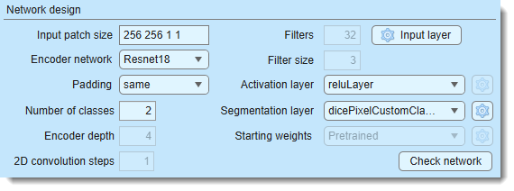
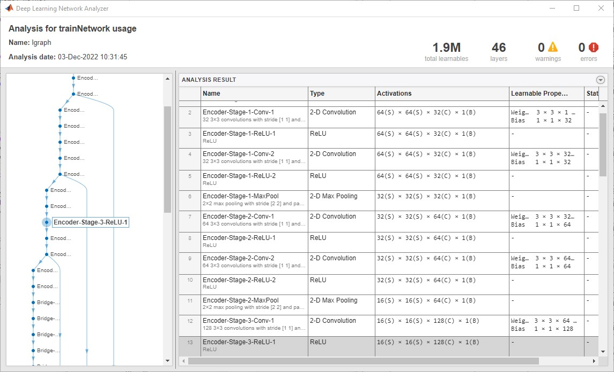
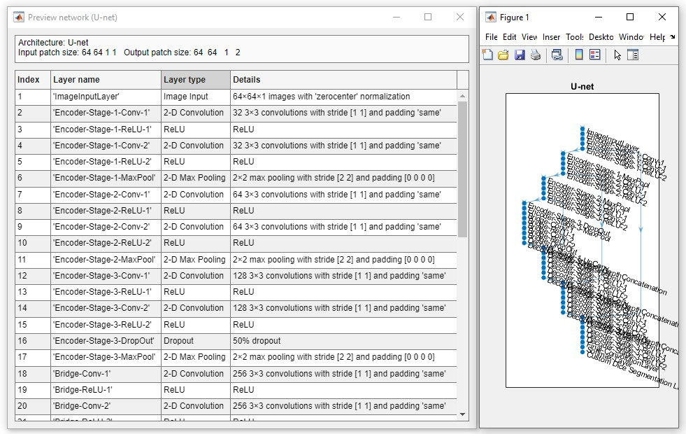
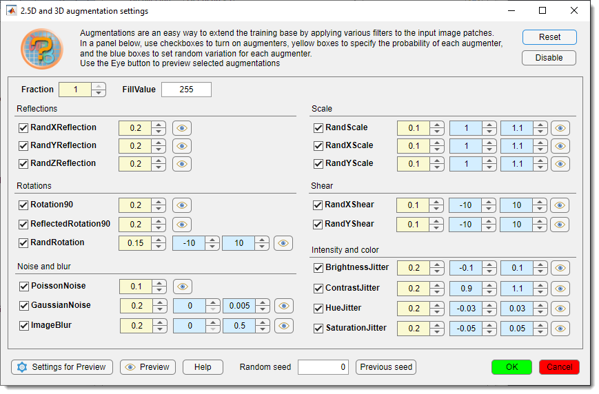
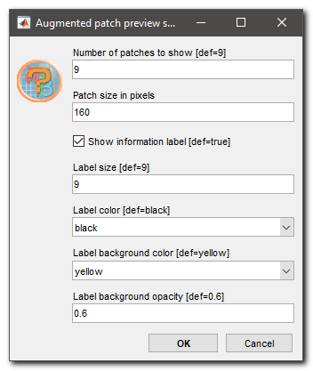
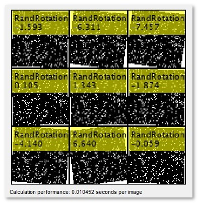
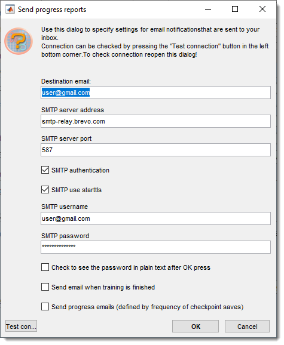
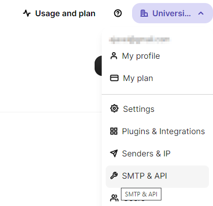

Deep MIB - Train Tab¶
Settings for generating and training deep convolutional networks in Microscopy Image Browser.
Overview¶

The Train tab in Deep MIB contains settings for designing and training deep convolutional networks. before starting, adjust the default settings to your project’s needs and ensure the output network file is specified using the button in the Network panel.
Network design¶
The Network design section configures the network architecture.

- defines the dimensions of image blocks
(
height, width, depth, colors) for training (e.g., "572 572 1 2" for a 572x572x1 patch with 2 color channels), Define the input patch size based on available GPU memory, desired field of view, dataset size, and channels. Patches are randomly sampled, with the count set in - selects the encoder for supported architectures, sorted from lightweight to more complex
-
sets convolution padding type:
- same: adds zero padding to keep input/output sizes equal
- valid: no padding, reducing output size but minimizing edge artifacts (though same with overlap prediction also reduces artifacts).
Info
Press to verify compatibility of the input patch size with the selected padding method
-
specifies the total number of materials, including
Exterior - sets the number of encoding/decoding layers in U-Net, controlling downsampling/upsampling by 2^D. Tweak with (Beta version) to adjust patch size
- defines the number of output channels (filters) in the first encoder stage, doubling per subsequent stage, mirrored in the decoder
- sets convolutional filter size (e.g., 3, 5, 7)
- configures input image normalization settings
-
selects the activation layer type, with additional settings via the button when available
list of available activation layers
Compare activation layers here:
- reluLayer: Rectified Linear Unit (ReLU) layer, default activation layer
- leakyReluLayer: Leaky Rectified Linear Unit (ReLU) layer scales negative inputs
- clippedReluLayer: Clipped Rectified Linear Unit (ReLU) layer performs a threshold operation, where any input value less than zero is set to zero and any value above the clipping ceiling is set to that clipping ceiling
- eluLayer: Exponential linear unit (ELU) layer exponential nonlinearity for negatives
- swishLayer: Swish activation layer applies f(x) = x / (1+e^(-x))
- tanhLayer: Hyperbolic tangent (tanh) layer -
selects the output layer, with settings via the button when available
List of available segmentation layers
- pixelClassificationLayer: cross-entropy loss
- focalLossLayer: focal loss for class imbalance
- dicePixelClassificationLayer: generalized Dice loss for class imbalance
- dicePixelCustomClassificationLayer: modified Dice loss for rare classes
-
states where the initial weights come from and how much of the network is retrained. The available states are a property of the selected workflow.
List of available properties
Network design Starting weights 3D Semantic; U-net +Encoder with the Classicencoder; SegNetNone (random)DeepLab v3+ / Z2C + DLv3; U-net +Encoder with a Resnet encoder Pretrained2D Patch-wise (Resnet/Xception) None (random)orImageNet(user choice)2D Instance (SOLOv2) COCO, frozen then trainable(default),COCO, frozen backboneorCOCO, trainable backbone-
Pretrainedmeans the network starts from an already trained template rather than from scratch. What that template is depends on the design: DeepLab v3+ with a Resnet encoder downloads a MIB-hosted template the first time it is used and asks you to choose the Electron Microscopy or Light microscopy/Pathology variant, whereas the U-net Resnet encoders are fetched from the MIB encoder repository. The downloaded template is cached in the DeepMIB directory (Preferences → External directories) and reused silently from then on, so the choice is a property of your installation and is not stored in the configuration file. -
ImageNetapplies to the 2D Patch-wise classification networks and requires the MATLAB version of MIB plus the matching support package; it is not offered in the standalone version. -
For SOLOv2 the network always starts from COCO weights, and the choice is what happens to the backbone. The two single-phase states want different learning rates, which is why the default combines them:
-
COCO, frozen then trainable(default, recommended) runs training in two phases automatically. The backbone is held fixed while the heads learn, then it is unfrozen and training continues from that network at a much lower rate so the features adapt to microscopy data. Nothing has to be restarted by hand. -
COCO, frozen backboneholds the COCO features fixed for the whole run. Fast, and the safest choice on a very small number of annotated images. -
COCO, trainable backboneunfreezes from the very start. Only use it deliberately, and only with the learning rate already lowered - see the warning below.
The two phases need different learning rates: the heads start from random weights and have a long way to travel, while the COCO backbone is already good and only tolerates small steps. Phase 2 therefore uses its own rate, set in the settings dialog below.
The epoch budget is not increased: whatever the frozen phase leaves unused is handed to the trainable phase, so
MaxEpochsstill describes the whole run. Each phase draws its own progress plot, and the exported.scoreand CSV files contain one continuous curve across both.At the moment of the switch the frozen-phase network is always written to
<Results>/ScoreNetwork/net_checkpoint__frozenPhaseEnd_<iterations>__<timestamp>.mat, whether or not is enabled. -
SOLOv2 needs a small initial learning rate - use
0.001The tooltip quotes two MATLAB defaults:
0.01for thesgdmsolver and0.001foradam. DeepMIB uses adam, so0.001is the one that applies.Above about
0.003the network collapses and never recovers, whether the backbone is frozen or not. The symptom is easy to recognise: the loss drops for a few hundred iterations, then sits flat at a high value, and the validation mAP stays at0.000for the whole run - nothing is detected at all.If this happens, lower the learning rate and start again. Unfreezing the backbone cannot repair it.
Collapse detection
A collapsed run and a finished one both show a flat loss curve, so
COCO, frozen then trainablealso watches the validation mAP. If it stays at0.000for several evaluations in a row the run is treated as failed: it stops instead of moving to the trainable phase, and a dialog explains what to change.Collapse evaluations in the dialog sets how many (default
8,0turns the check off). It needs a validation set and the custom training progress window.Starting weights settings
The button next to the dropdown is enabled for
COCO, frozen then trainableand configures the schedule:Setting Default Meaning Minimum frozen share 0.07 No switch happens before this share of the total epochs Maximum frozen share 0.15 The switch happens no later than this Plateau window 25 epochs The mean loss of the last window is compared with the window before it Plateau tolerance 0.01 Below 1% improvement between those windows, the loss counts as flat Trainable phase learn rate 1e-4 The learning rate phase 2 runs at, capped at the initial rate Collapse evaluations 8 Abandon the run after this many consecutive validation evaluations with a zero mAP; 0disables the check -
-
previews and validates the network (limited info in standalone MIB)
Snapshots of the network check window for the MATLAB and standalone versions of MIB
MATLAB version:
Standalone version:


Augmentation design¶

Augmentation enhances training data with image processing filters (17 for 2D, 18 for 3D networks), configurable via buttons next to .
- : enables augmentation of input patches
- : sets augmentation for 2D networks (17 operations)
- : sets augmentation for 3D networks (18 operations)
Specify the fraction of patches to augment, plus probability and variation per filter. Multiple filters may apply to a patch based on probability.
2D/3D augmentation settings
Press or to open the settings dialog: 
- Toggle augmentations with checkboxes
- Set (yellow) and (light blue)
- restores defaults
- turns off all augmentations
- probability of patch augmentation (1 = all, 0.5 = 50%)
- background color for downsampling/rotation (0 = black, 255 = white for 8-bit)
- previews patches with augmentations, fixed or random based on (0 = random)
-  adjusts preview parameters
adjusts preview parameters

Details settings for preview
 
Example augmentations from :


- : links to training help
- : restores the last random seed (when Random seed = 0)
- : applies settings
- : discards changes
Training process design¶

The Training process design section configures the training process, started with .
<Results> in the paths below
Everything training writes goes into subfolders of the directory with resulting images, which you set on the
Directories and preprocessing tab - it is not fixed to any particular name. <Results> stands for
that directory throughout this page, so <Results>/ScoreNetwork is the ScoreNetwork subfolder inside whichever
results directory the project uses.
- sets patches per image/dataset per epoch. Use 1 patch with many epochs and Shuffling: every-epoch (via ) for best results, or adjust as needed
-
number of patches processed simultaneously, limited by GPU memory. Loss is averaged across the batch
Finding a good mini-batch size
A larger mini-batch normally trains faster, until it no longer fits in GPU memory - after which training slows down dramatically instead of stopping with an error.
The button next to the field measures this for you, for any workflow. It trains the current network on randomly generated patches for a few iterations at each mini-batch size and reports how many patches per second each one manages; the best value is where that number peaks. Your images are not used and nothing is written to the project.
For instance segmentation the generated patches are given as many objects as your own labels contain, since that is what drives the cost - the label maps are sampled to find out, the images still are not read.
You are asked which size to start from (
1by default). Testing doubles from there and stops once throughput starts dropping, so raising the start value skips small sizes that cannot win and shortens the test. Large patches can still take a few minutes.The result table also gives epochs/hour for each size, together with an estimate of how long the configured Max epochs would take. Use it to check the run is affordable before starting it.
The suggested value is slightly optimistic, because a real run also holds the validation set and the augmented patches in memory. If a run using it slows down or fails, drop to the next size down.
- seeds the random number generator for training initialization
(use any fixed value except
0for reproducibility, otherwise use0for random initialization each training attempt). Training patches are re-sampled every epoch either way - this seed only fixes the sequence they are drawn in
Random seed for the valication patches
seeds the validation patches, separately from the training seed above
The two want opposite things. Training benefits from fresh patches every epoch; validation only means something if the patches do not move, because a loss measured on different crops each time reports which crops were drawn as much as how good the network is - and
OutputNetwork: best-validation-lossthen picks the luckiest draw rather than the best network.Validation patches are re-cropped on every pass by default, in all workflows that crop patches. With a non-zero value the same patches are used at every evaluation, so the curve is comparable point to point. Use
0to restore the previous behaviour of fresh random validation patches at every evaluation.Workflow What the seed does 2D / 2.5D / 3D Semantic The validation patches are extracted once under this seed and replayed at every evaluation 2D Instance Every validation image is always cropped at the same windows 2D Patch-wise Nothing - validation uses whole images from a fixed file list and never moves The button beside the seed inspects the patches that seed produces, so a seed can be judged before spending a training run on it. A draw that lands mostly on background makes the validation loss a poor guide, and
OutputNetwork: best-validation-lossthen selects against a set that does not represent the data - press the button, look, change the seed, look again.It first asks how many patches the validation set holds and offers two ways to look:
-
Show collage - a montage of the first patches in the set. It uses the same appearance settings as the augmentation preview (Augmentation → 2D/3D →
): number of images,
display size, and the label font and colours. Labels show the source and, for 2D Instance, how many annotated
objects the patch contains - the quickest way to spot a patch that is nearly empty. -
Export to disk - every validation patch written at 100% magnification to
<Results>/ScoreNetwork/ValidationPatches, as an image (<index>_<source>.tif) plus a MIB model of its labels (Labels_<index>_<source>.model). Open the pair in MIB to check the annotations at full resolution. For 2D Instance each object gets its own index in the model, exactly as instance predictions are stored.
Both options show a progress dialog that can be cancelled. Cancelling an export keeps the patches already written and reports how many of the total were done.
With a seed of
0both options give one example draw, since the patches are re-cropped at every evaluation.Class names in exported semantic models
Semantic exports label their materials
Class01,Class02, … rather than the names from your model file. The label indices are correct, only the names are generic. If a validation label set cannot be read, the images are still exported and the models are skipped.How many validation patches there are
applies to the validation images as well, so the validation set holds patches per image x number of validation images observations. With only a handful of validation images, raising Patches per image is the cheapest way to make the validation curve less noisy.
The semantic patches are held in memory
Freezing the semantic validation set means keeping every validation patch in RAM for the whole run. Deep MIB reports the size on the console when it does so, and backs out with a warning above 2 GB, leaving the patches randomised rather than risking the run. Lower Patches per image or use fewer validation images if you hit that.
- seeds the random number generator for training initialization
(use any fixed value except
-
sets multiple parameters (see trainingOptions).
Tip
set Plots to "none" for up to 25% faster training
-
saves checkpoints after each epoch to
<Results>/ScoreNetwork. Resume training from checkpoints via a dialog. In R2022a or newer, it is possible to adjust frequency for saving checkpointsWhat a new run clears, and what it keeps
Choosing Start new training in the resume dialog deletes only the checkpoint networks (
net_checkpoint__*.mat). MATLAB names those after the iteration alone, so they accumulate across runs at tens of MB each and would otherwise fill the restore dialog.Score, CSV, PNG and FIG exports are kept. Every one of them is written with a
<yyMMddHHmm>_<network name>prefix, so runs cannot overwrite each other and the history of a project stays in the folder. -
saves accuracy/loss scores to
<Results>/ScoreNetworkin.score(MATLAB) and CSV formats, using the network filename. When the Deep MIB progress window is in use, a.pngsnapshot of it and a reopenable.figare written alongside them when training finishes - emails progress/finish updates. configure SMTP settings via the checkbox
Configuration of email notifications¶
Configuration of email notifications

- recipient address
- SMTP server address
- server port
- enables authentication
- enables TLS/SSL
- server username (e.g., Brevo email)
- server password
(hidden, toggle Check to see the password in plain text after OK press to view)
- emails on completion
- emails progress (custom training dialog only, frequency tied to checkpoints)
- tests settings after saving with

Important!
Important: Use dedicated SMTP services (e.g., Brevo) instead of personal email accounts
Configuration of brevo.com SMTP server
- Sign up at Brevo
- Access SMTP and API from the top-right menu:

- Click
- Copy the key to the password field in email settings

Start the training process¶
Click to begin. If a network file already exists
in , a dialog offers to resume training.
A .mibCfg config file is saved in the same directory, loadable via Options tab → Config files → Load.
During training, a loss function plot appears (blue = training, red = validation), with accuracy gauges at the bottom left.
Perform
Stop training with or (faster but may not finalize networks with batch normalization).
Stopping a 2D Instance run early
Instance segmentation trains through MATLAB's trainSOLOV2, whose trainer only ends the
current epoch when asked to stop — it still walks through the epochs that were left
before it returns. Deep MIB makes those leftover epochs as cheap as it can, but
still costs roughly a minute per 1000
remaining epochs. The network and the full training curve are finalized normally.
leaves the trainer immediately and rebuilds the network from the most recent checkpoint, so keep Train tab → Save checkpoint networks enabled if you expect to use it. The recovered network is up to Checkpoint frequency epochs behind the point where you pressed the button, and the exported training curve is the one drawn in the progress window rather than the full per-iteration log.
By default, Deep MIB uses a custom progress plot. If you want to use default MATLAB’s training plot (MATLAB version only),
uncheck Options tab → Custom training plot → Custom training progress window.
The Training progress and settings panel reports four timings: when the run Started, the Elapsed time, the estimated Time to go, and Time/epoch - the average time one epoch has taken so far. Use the last one to check that the configured Max epochs is affordable before leaving a run overnight: multiply it by the epochs remaining. Hover it to see the time per iteration.
GPU memory readout
On a single GPU the device name also shows how much memory the run has used at most:
1. NVIDIA GeForce RTX 3080 Ti (peak 7.2/12.0 GB). It is a conservative figure - the real peak inside an iteration is
higher - so treat it as a rough guide to how much headroom is left rather than an exact measurement.
If the card runs short of memory, Windows does not report an error: it moves GPU memory into ordinary system RAM and
training carries on many times slower. Deep MIB notices this by watching how long an iteration takes, and when the
run slows down sharply it colours the device name red and adds - over limit. Training is not stopped, but it is
worth restarting with a smaller .
This only catches a run that slows down partway through. If the mini-batch was too large from the very start there is nothing to compare against, so use the button next to to find a good value beforehand.
Disable plots for speed via Train tab → Training → Plots → none.
Preview patches (bottom right) reduce performance; adjust frequency in
Options tab → Custom training plot → Preview image patches and Fraction of images for preview (1 = all, 0.01 = 1%).

Custom DeepMIB training loss plot
After training, the network and config files are saved to the location in .